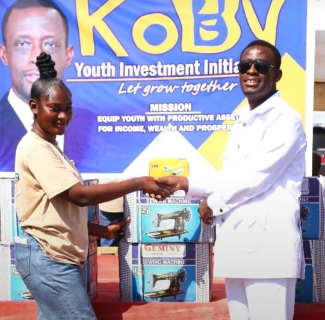

Giving.kobbydogood.org
Donation & Relief Platform
Kobby Giving & Donations
The transparency portal showcasing all philanthropic donations and direct financial interventions made personally by Kwabena Okyere Darko-Mensah from his private resources. From settling emergency hospital bills at Effia Nkwanta Regional Hospital to providing educational scholarships for needy tertiary students and distributing relief packages across Takoradi.
Full transparency of all disbursed community grants & relief
Medical distress fund for families across Western Region
Annual tertiary & secondary school scholarship disbursement